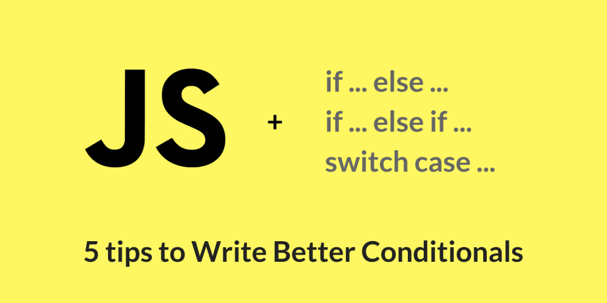

const sabe = documnet.querySelector(«.sabe»);
JavaScript for the Web
JS
Изначально JavaScript был создан для того, что-бы добавить интерактивности и «оживить» сайт, но этот язык программирования давно уже вышел за рамки того, для чего был создан.
Динамический язык программирования, изначально носивший название Mocha, был написан группой программистов во главе с Брэндоном Эйком в 1995 году. Язык был создан за 10 дней для компании Netscape, которая нуждалась в скриптовом языке для своего браузера с одноименным названием.
Из Mocha язык был переименован в LiveScript, а затем в JavaScript по причине высокой популярности в то время языка Java (хотя эти языки мало что объединяет). Статистика сразу нескольких уважаемых ресурсов, таких как GitHub, StackOverflow и других, утверждает, что JavaScript является языком программирования, который быстрее всего набирает популярность, а результаты опросов разработчиков со всего мира и вовсе ставят JavaScript на первое место среди самых популярных языков программирования.
JavaScript был придуман как язык для браузеров, но на сегодняшний день на нём можно создавать сервер, разрабатывать веб-приложения, мобильные приложения, игры и многое-многое другое. Если раньше JavaScript входил в обязательный список умений для front end-разработки, то сейчас он уверенно чувствует себя и на back end.
Количество вакансий для JavaScript разработчиков увеличивается не по годам, а с каждым месяцем, что связано с несколькими факторами сразу: растущими возможностями языка, относительной простотой в изучении, а также проникновением интернета во все сферы человеческой жизни.
💁♂️ 3 ways to set default value
let isHappyHour = ‘🍺 ’
// Logical Operator
Image 1. 5 tips to Write Better Conditionals
Структура языка - это три составляющие:
ядро языка - ECMAScript,
объектная модель документа - DOM,
объектная модель браузера - ВОМ.
Спецификация (формальное описание синтаксиса, базовых объектов и алгоритмов) языка Javascript называется ECMAScript. На сегодняшний день доступна восьмая спецификация языка или, если быть точным, ECMAScript 2017.
На английском языке (без которого в IT-сферу попасть крайне сложно), можно выделить такие сайты:
Удачи всем, кто решил изучить популярный и интересный язык JavaScript, у вас все получиться!
to be continued